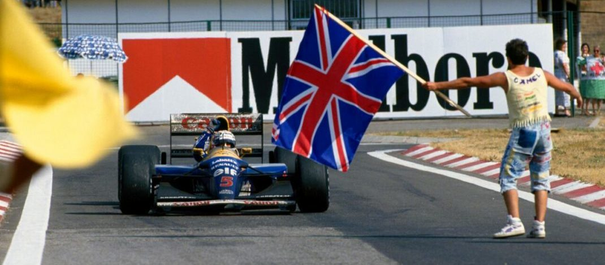

FINALMENTE, O TÍTULO

Senna ganha magistralmente e Mansell é 2º, suficiente para assegurar o título mais cedo que ninguém. Patrese lidera da pole, mas sai da pista. Hakkinen soberbo. Schumacher roda a mais de 25Okm/h. 12 acidentes em 15 abandonos. FISA impõe gasolina comercial. Pouco publico.
Por Francisco Santos
Nigel Mansell pareceu nervoso durante todo o fim de semana. Tenso. Seu carro não estava como de costume. Ele também não, com a cabeça um pouco cheia de tanta negociação por todo o lado. Ainda por cima, Patrese era sempre o mais rápido nos treinos. Na corrida largou mal e caiu para quarto logo a chegada a importante primeira curva. Depois conseguiu passar Berger e ficar em terceiro atrás de Senna, mas tentou, tentou, e nunca dava. Só que hoje, Mansell nem sequer precisava ganhar para finalmente ser campeão. Ele sabia disso, como também se recordava o que havia acontecido no passado, quando tinha estado tão perto e ficara tão longe do titulo. Por duas vezes. Agora havia que se acalmar, e não se precipitar. Estava em jogo um título e não uma corrida, mesmo que essa fosse a 9ª do ano, um recorde.
Viu que não dava para passar Senna, até porque aquela vantagem na reta havia sumido com o combustível especial agora vetado pela FISA em favor de gasolina “de bomba”, e em curva com um carro surpreendentemente instável nas curvas rápidas, especialmente na que antecede o retão, mesmo comparado com o McLaren. Claro que Senna usava o seu habitual truque de atrasar um pouco na entrada no meio da curva para que Mansell, mais rápido na aproximação perdesse o “momentum” e fosse pego de surpresa sem poder acelerar o suficiente para chegar na sua traseira e ficar no cone de aspiração do McLaren. Não valia a pena arriscar, e deixou-se ficar para trás. Patrese vai-se embora, inalcançável, mesmo por Senna com pneus D mais macios, que tinham de ser preservados para durar a distância – essa poderia ser uma tática vencedora. Mas, já com 30s de vantagem sobre Senna, Patrese roda, sai da pista, perde o comando e regressa em 7º, muito atrasado. Recupera um pouco, mas o seu motor quebra, pela primeira vez numa corrida este ano.
Já com o titulo certo no seu segundo lugar, Mansell vê o fantasma do azar aparecer de novo: um furo. Tem de ir ao box, e baixa para 6º, a 14s do espantoso Hakkinen. Com pneus novos e a antiga garra, recupera o 2º” lugar em sete eletrizantes voltas em que tem de ultrapassar um Lotus, os dois Benetton em uma briga de foice com Brundle a dar um toque no suporte do aerofólio traseiro de Schumacher, o que causou o seu abandono mais a frente, no final da reta, quando o apoio era máximo, causando uma rodada impressionante a mais de 250km/h, felizmente sem consequenciais, e ainda passar Berger. Entretanto, Ayrton com pneus já muito degradados e boa visão, viu que o ritmo de Mansell com pneus novos poderia eventualmente por em perigo a sua vitória. Vai ao box a seis voltas do fim, volta ainda na frente, e ganha sem problemas até porque Mansell estava apenas interessado em garantir o título. Uma corrida movimentada e emocionante.

As pisadas da FISA
Há ano um e meio, Balestre tinha imposto aos organizadores deste GP obras de vulto para terem a prova mantida no calendário mundial. Visava-se sobretudo dar um traçado mais competitivo, que desse mais oportunidades de ultrapassagem. Mas isso seria impossível devido ao custo e ao fato do terreno adjacente ser de outros proprietários. Como resultado o voto húngaro nas eleições foi para Mosley. O revestimento da pista foi completamente refeito e a maioria das zebras rebaixadas, já que estavam perigosamente altas. O novo piso, embora um pouco menos escorregadio que o anterior, formou algumas ondulações. As zebras mais fáceis de transpor vieram permitir que os pilotos as galguem com mais facilidade e até cheguem a pisar fora delas, jogando terra para a pista, o que a tomou constantemente ainda mais escorregadia e provocou varias rodadas. De qualquer forma, o Hongaroring continua o mesmo, uma pista em que “se esqueceram de por retas”, como diz Domingos Piedade.
Só para cinco
Com a saída de Eric van de Poele para a Fondmetal, a Brabham não o substituiu e tinha apenas um carro na Hungria. Por isso, Bertrand Gachot pôde dormir mais um pouco: dos seis condenados, era o piloto melhor classificado e passava direto aos treinos. As pré ficaram com apenas cinco carros. Foi uma farsa ainda maior, porque além de já se saber quais seriam os quatro apurados, a Andrea Moda, mesmo sem ter que qualificar Moreno, só deixou McCarthy sair para a pista nos últimos instantes, o que não lhe permitiu fazer sequer uma volta lançada, e o deixou furioso com a equipe. Os Comissários Desportivos preveniram que se a equipe não agisse de forma mais responsável, seria expulsa do campeonato. Tarquini foi o mais rápido, como se esperava, e van de Poele o segundo.

Mansell com problemas
Parecia irreal: Mansell teve problemas durante todos os treinos, principalmente de estabilidade, não conseguindo – pela primeira vez no ano – fazer o melhor tempo em nenhuma das cinco sessões de treino. Desde cedo se viu que com a nova gasolina comercial – anulada a vantagem das “poções mágicas gaulesas” da Elf – a diferença entre os Williams e os demais, principalmente os McLaren, era menor. Pela primeira vez a McLaren também usava controle de tração em corrida, o que nesta pista com piso tão escorregadio era uma vantagem adicional. Mesmo assim, os dois Williams foram os mais rápidos – os únicos a baixarem para 1m15s ficaram de novo com a primeira fila do grid. Só que desta vez foi Patrese o mais rápido. Em todas as sessões de treino de sexta e sábado. Foi a sua primeira pole desde Portugal do ano passado. Oito pilotos estrearam nesta pista, o que com o novo piso da pista, tão escorregadio quanto o anterior, causou intermináveis rodadas. De salientar Belmondo, na sua ultima prova pela March, ter batido Wendlinger nos treinos, e Tarquini, que tem de fazer as pré ter ficado na 6ª fila do grid. Também notório foi o tempo de Ayrton, inferior a sua pole do ano anterior, o que não diz muito deste MP4-7A, apesar de ter ficado a menos de 1s de Patrese.

Mansell nao arrisca para garantir titulo
A Williams estreava em corrida o motor Renault RS4, e por isso a Ligier podia passar dos RS3B para os RS3C, até agora usados pela equipe inglesa. Que desperdício: logo na primeira volta os dois companheiros de equipe, sim, da mesma equipe – repetem o bailado de Interlagos e batem a saída da primeira curva, abandonando os dois no ato, e provocando o abandono de Herbert. Ao contrario da grande maioria que decide montar pneus C, eventualmente D nas rodas direitas, Senna arrisca e monta quatro D mais macios. Era a sua única chance e arrisca tudo, com uma pilotagem precisa e cuidadosa nas primeiras voltas. Uma repetição de três semanas antes. E ganha com uma corrida magistral, embora, claro, ter contado com a sorte pela saída de Patrese. Mansell, no entanto, pode ser louvado pela sua inusitada calma, pode ser criticado por não ter pressionado Senna um pouco mais, obrigando-o a gastar mais os seus pneus e a os trocar mais cedo. Mas, isso seria pedir muito de quem já teve tanto azar e nem sequer precisava correr esses riscos. De notar a prova fantástica de Hakkinen, com ultrapassagens geniais, principalmente sobre a Brundle, por fora. Isto apesar do “carro ser terrível com tanque cheio.” Nas primeiras 14 voltas houve nada menos que 11 abandonos por acidente. A principio, os técnicos da Renault e da Elf temeram que o problema com o novo motor RS4 de Patrese fosse devido a gasolina de bomba, e que se pudesse repetir com Mansell, mas foi apenas um caso de ignição. Quanto ao acidente, Bernard Dudot confirma as palavras de Patrese: “a telemetria mostra-nos que ele fez tudo nessa volta como nas demais”, pelo que deve ter sido um problema de piso escorregadio localmente.